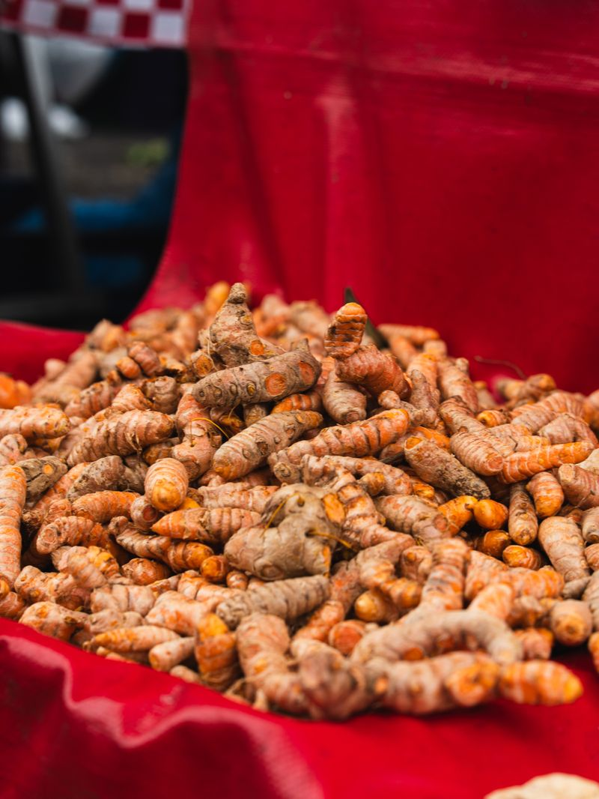
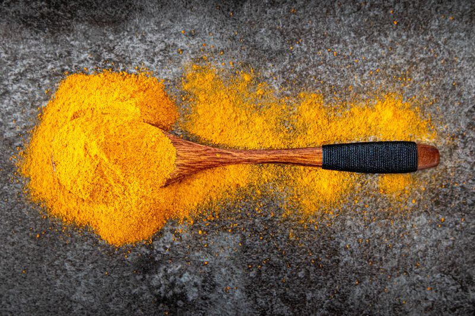

Thé de Pissenlit



Le Thé de Pissenlit ORGA_ME est une infusion douce à base de feuilles et de racines de pissenlit soigneusement sélectionnées, récoltées à l'état sauvage dans les champs préservés du Togo et du Sénégal. Les feuilles et les racines sont cueillies à la main à leur apogée nutritionnelle, puis nettoyées et séchées selon des techniques traditionnelles de séchage à l'ombre qui préservent leur saveur verte et terreuse ainsi que leur légère amertume. Le pissenlit est depuis longtemps apprécié en médecine traditionnelle européenne, asiatique et africaine pour ses qualités purifiantes et sa capacité à soutenir le foie, la digestion et la détoxification générale. Cette tisane est naturellement sans caféine et facile à consommer chaque jour, ce qui la rend adaptée à tous les âges. Chaque lot est soigneusement inspecté pour s'assurer que seules les meilleures feuilles et racines se retrouvent dans votre tasse.
Bénéfices pour le corps
Le Thé de Pissenlit soutient le fonctionnement sain du foie et aide le corps à maintenir ses processus naturels de détoxification. Il encourage le flux de bile, ce qui favorise la digestion et l'absorption des nutriments, particulièrement après les repas plus riches. La tisane agit également en douceur pour soutenir la fonction rénale et l'équilibre hydrique naturel, aidant le corps à éliminer les déchets plus efficacement. Ses propriétés diurétiques naturelles sont douces et équilibrées, contrairement aux alternatives synthétiques agressives.
Les antioxydants du pissenlit aident à soutenir la santé cellulaire et à protéger le corps du stress oxydatif. Le pissenlit contient également des vitamines A, C et K, ainsi que des minéraux tels que le potassium et le calcium, ce qui en fait un choix nourrissant pour une utilisation quotidienne. De nombreux clients l'apprécient pour sa capacité à favoriser la clarté mentale, l'énergie et une sensation de rafraîchissement interne. La teneur en vitamine K soutient particulièrement la santé osseuse et le bon fonctionnement de la coagulation sanguine.
Cette tisane est particulièrement utile pour les personnes recherchant un coup de pouce naturel doux après les repas et pendant les changements de saison. Sa légère amertume soutient le système digestif en stimulant la production d'enzymes digestives et d'acide gastrique. Ses propriétés diurétiques douces peuvent aider à maintenir le confort et l'équilibre en réduisant la rétention d'eau et les ballonnements. La consommation régulière de tisane de pissenlit peut favoriser une digestion saine et promouvoir une sensation de légèreté et de bien-être.
Parce qu'elle est sans caféine, la tisane de pissenlit ORGA_ME convient aussi bien le matin que le soir. Elle peut aider à apaiser le tube digestif, soutenir la santé du foie et encourager une énergie calme sans stimuler le système nerveux. De nombreuses personnes apprécient une tasse après le dîner pour faciliter la digestion et préparer le corps à un sommeil réparateur. Les fibres prébiotiques présentes dans les racines de pissenlit favorisent également la croissance de bactéries intestinales bénéfiques, promouvant une santé digestive à long terme.
Le pissenlit est utilisé dans les systèmes de médecine traditionnelle depuis des siècles pour soutenir la santé de la peau en aidant le corps à éliminer les toxines qui peuvent contribuer aux imperfections et au teint terne. Les propriétés anti-inflammatoires du pissenlit peuvent également aider à réduire les gênes articulaires occasionnelles et soutenir la mobilité générale. Une consommation régulière aide à maintenir une tension artérielle saine grâce à sa teneur en potassium et à son action diurétique naturelle.
Comment utiliser
Infusez une cuillère à café de feuilles et racines de pissenlit dans de l'eau chaude (85-90°C) pendant 5 à 7 minutes. Filtrez et dégustez chaud ou rafraîchi. Prenez une fois par jour, ou selon vos besoins après les repas. Pour un thé plus fort au goût plus amer, augmentez le temps d'infusion à 10 minutes ou utilisez une cuillère à café et demie.
Pour une saveur optimale, combinez le thé de pissenlit avec une touche de miel et de citron, ce qui équilibre l'amertume terreuse avec une douceur naturelle et une acidité d'agrumes. La tisane peut également être mélangée à d'autres herbes comme la menthe poivrée ou la camomille pour un profil de saveur personnalisé. Conservez dans un contenant hermétique dans un endroit frais et sec à l'abri de la lumière directe du soleil pour préserver la fraîcheur et la puissance. Consommez dans l'année suivant l'achat pour une saveur optimale.
Ingrédients
100% feuilles et racines de pissenlit séchées (Taraxacum officinale) — aucun additif, aucun conservateur, aucune saveur artificielle.